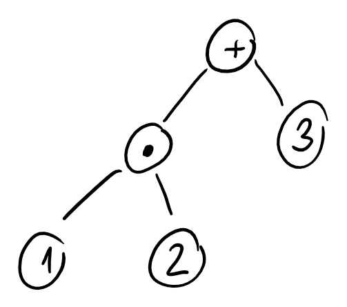

Arbol de Expresion: Es un vertice con un numero o con una operacion matematica tal que sus hijos derecho o izquierdo son arboles de expresion. Por ejemplo, se puede escribir a la formula con el siguente arbol de expresion.

Este algoritmo ordena a los nodos de un arbol de arriba hacia abajo y de izquierda a derecha.
xIn: Arbol binarioOut: Lista de vertices ordenados por nivelSortByLevel = function(binaryTree){ var cola = []; var output = []; cola.push(binaryTree.root) while(cola.size != 0){ var node = cola.pop(); output.push(node); foreach(var child in node.getChildrenLeftToRight()); cola.push(child); } return output;}xxxxxxxxxxsortPreordenIzquierdo = function(BinaryTree){ var output = []; var pila = []; pila.push(BinaryTree.root); while(!pila.isEmpty()){ var node = pila.pop(); output.push(node); foreach(var child in node.getChildrenRightToLeft()) pila.push(child); } return output;}xxxxxxxxxxsortPreordenIzquierdo = function(node,output){ if(node == null){ return; }else{ output.push(node); } sortPreordenIzquierdo(node.getChildLeft(),output); sortPreordenIzquierdo(node.getChildRight(),output); }xxxxxxxxxxsortPostorden = function(BinaryTree){ var pila = []; var output = []; pila.push(BinaryTree.root); while(!pila.isEmpty()){ if(!pila.top().isVisited) { var node = pila.top(); node.isVisited = true; foreach(var child in node.getChildrenRightToLeft()) pila.push(child); } else{ output.push(pila.pop()); } }}xxxxxxxxxxsortPostorden = function(node, output){ if(node == null) return; sortPostorden(node.getLeftChild(),output); sortPostorden(node.getRightChild(),output); output.push(node);}xxxxxxxxxxsortInorder = function(BinaryTree){ var pila = []; var output = []; pila.push(BinaryTree.root); while(!pila.isEmpty()){ var node = pila.top(); while(node.getLeftChild() != null){ pila.push(node.getLeftChild()); node = node.getLeftChild(); } node = pila.pop(); output.push(node); if(node.getRightChild() != null){ pila.push(node.getRightChild()); node = node.getRightChild(); } else{ while(!pila.isEmpty() && node.getRightChild() == null ){ node = pila.pop(); output.puhs(node); if(node.getRightChild() != null) pila.push(node.getRightChild()); } } }}xxxxxxxxxxsortInorder = function(node, output){ if(node == null) return; sortInorder(node.getLeftChild(),output); output.push(node); sortInorder(node.getRightChild(),output);}